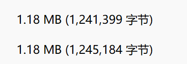
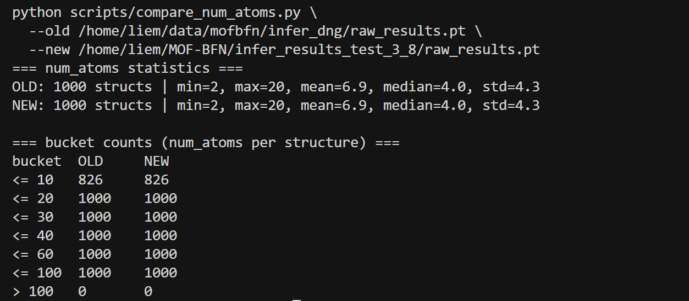
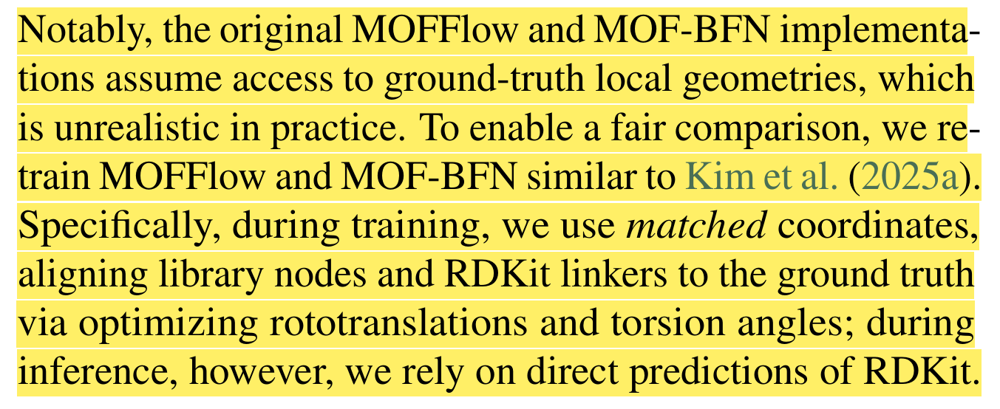
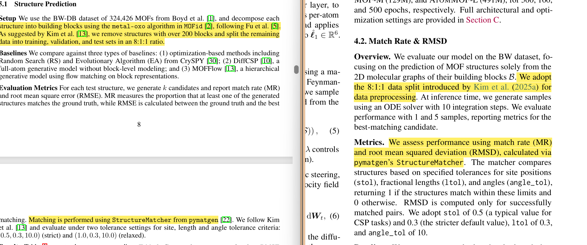
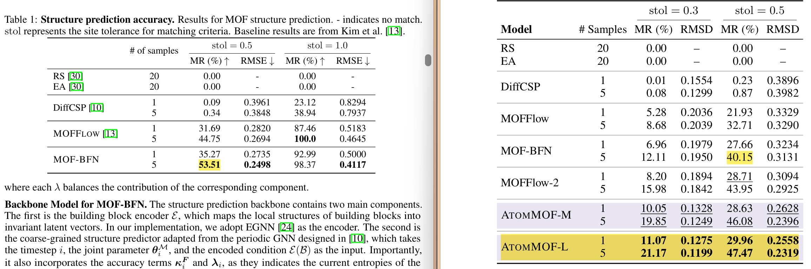

3-10-repo
Debug¶
- 我猜测是新模型生成的
raw_results.pt里有更多参数，结果发现连个文件一样大。

- 我猜测是新模型生成的
raw_results.pt里，每个样本的 block/atom 数量、拓扑复杂度、距离计算量 比老模型大很多，结果各项数据一致。

-
从连通性来考虑
-
新模型生成的结构里，图的连通性非常差，
connect_check在做图搜索 / 骨架判定时，会遍历一堆碎片、失败路径，导致计算过程变长； - 旧模型里，大部分结构都是“一两次 DFS/BFS 就能覆盖整张图的 3D 网络”，图搜索非常顺利，所以很快。
接下来¶
- 探索在不破坏已有性能的前提下，引入更物理合理的约束，转向更稳健的几何/体积约束。
引入 lattice 体积的下限约束（体积 hinge 正则）¶
- 在
models/crysbfn_bhm.py的loss_one_step中新增： - 从
lattice_pred和lattices恢复长度 (a,b,c) 和角度 (\alpha,\beta,\gamma)，按晶体体积公式计算 log V。 - 定义 体积下限 hinge：
- 只在
logV_gt - logV_pred > margin时才产生惩罚（即预测体积明显小于 gt 时）； vol_hinge_loss = mean(relu(logV_gt - logV_pred - margin)^2)；- 通过权重
cost_volume加到原有lattice_loss上。
- 只在
- 为了安全：
- 所有数值操作包在
try/except内，异常时退回原始lattice_loss； - 新增超参默认值设为 0，即当前 baseline 行为完全不变。
- 所有数值操作包在
- 配套超参设计：
- 在
bfn_model_bhm_tot.yaml之外，用 Hydra override 方式控制：model.cost_volume：体积惩罚权重（从 0.05–0.1 试起）；model.volume_hinge_margin：允许预测体积比 gt 小的容忍度（例如 0.05，对应 (\log V)）。
对照试验¶
原版 baseline（无体积正则）¶
cd /home/liem/MOF-BFN
export PYTHONPATH=.
export LD_LIBRARY_PATH="${HOME}/.local/share/mamba/envs/mof-bfn/lib:${LD_LIBRARY_PATH}"
export CUDA_VISIBLE_DEVICES=1
nohup python experiments/train.py \
experiment.num_devices=1 \
experiment.trainer.strategy=ddp \
experiment.wandb.project=mof_bfn_volume \
experiment.wandb.name=baseline_no_vol \
\> logs/baseline_no_vol.log 2>&1 &
卡 3：体积 hinge 正则版本¶
cd /home/liem/MOF-BFN
export PYTHONPATH=.
export LD_LIBRARY_PATH="${HOME}/.local/share/mamba/envs/mof-bfn/lib:${LD_LIBRARY_PATH}"
export CUDA_VISIBLE_DEVICES=3
nohup python experiments/train.py \
experiment.num_devices=1 \
experiment.trainer.strategy=ddp \
experiment.wandb.project=mof_bfn_volume \
experiment.wandb.name=vol_hinge_005_005 \
model.cost_volume=0.05 \
model.volume_hinge_margin=0.05 \
\> logs/vol_hinge_005_005.log 2>&1 &
Question¶
- 今天我读了 ATOMMOF ，他觉得mof-bfn的粗粒化以及block刚体假设是有局限的，并且也做出了更好的结果，我在想是否只有像 ATOMMOF 这样从底层逻辑进行的架构重构才具有学术意义？
- 两篇论文用的相同的data，ATOMMOF去掉了 MOF-BFN 使用“已知构建块形状”的假设，让mof-bfn的效果变差了，这样合理吗？如果按MOF-BFN原本的思路，还是BFN的效果更好呀。


